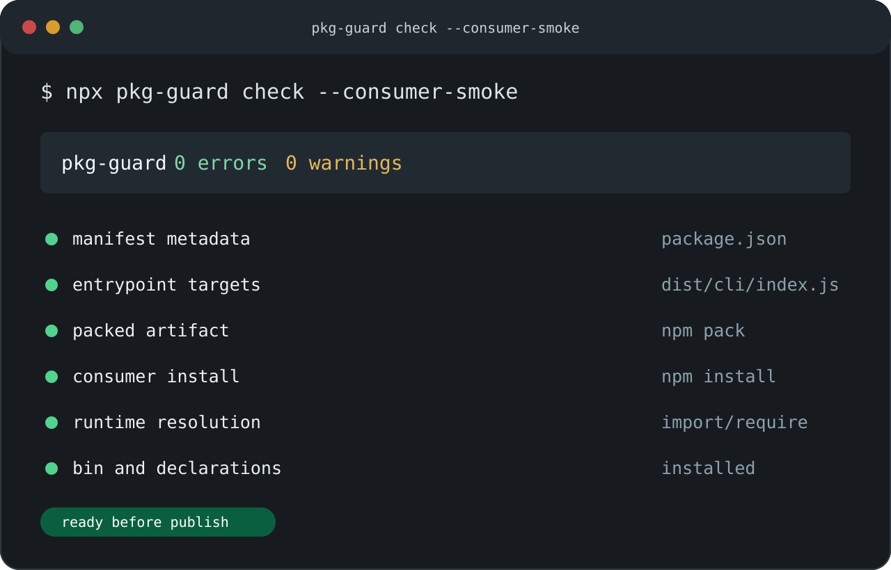

Package metadata that resolves cleanly.
Validate names, versions, licenses, repository links, package managers, scoped publish access, and publish-oriented fields.

npm package publishing hygiene
Find broken entrypoints. Catch bad tarballs. Check workspaces, lifecycle scripts, and release workflows.
Checks
`pkg-guard check` inspects the files and metadata that consumers actually rely on: the manifest, declared entrypoints, packed tarball contents, lifecycle scripts, TypeScript declarations, dependency ranges, workspaces, and npm publish workflows.
Validate names, versions, licenses, repository links, package managers, scoped publish access, and publish-oriented fields.
Check `main`, `types`, `exports`, and `bin` targets, including common export patterns, before a consumer finds the broken path.
Use npm pack inspection to detect missing files, junk artifacts, and sensitive files in publish output.
Infer CLI, TypeScript library, or generic intent so package-specific findings stay useful and suppressible.
Run across npm and pnpm workspace layouts, skip private packages by default, and target one package by name or path.
Use concise local output, structured automation output, or SARIF for code scanning style CI ingestion.
Workspaces
Run `pkg-guard check --workspaces` from the repository root to audit publishable workspace packages. Private packages are skipped unless explicitly included, and package-local config stays package-local.
Workflow
Keep `pkg-guard` close to the release path: run it locally while developing, then run it again in CI after the package build and before `npm publish`.
Install
npm install -D pkg-guard
npx pkg-guard check --workspacesnpx pkg-guard fix --dry-run
npx pkg-guard init --dry-run
npx pkg-guard init-release